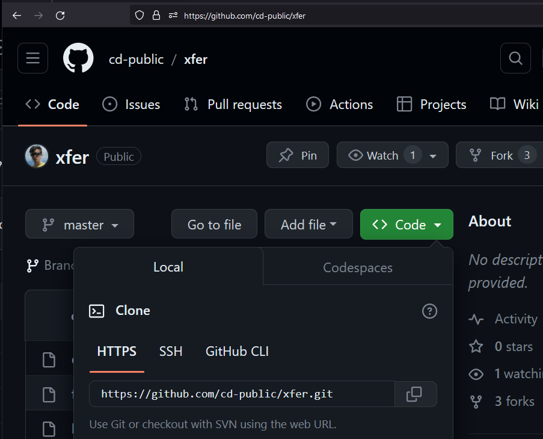

git
CS 271
Prof. Calvin
22 Jan 24
w02d01
Today
- gcc review
- Let's check in - how's it going.
- Do we need the Colab tech?
- Bash review
- Commands/Utilities
- Paths/Redirects
- Scripts
- git introduction
- Theory
- As a command line utility
git
- git stands for git and is a shell command of the same name:
- "Git it?" <slaps knee> - me
user@DESKTOP-THMS2PJ:~$ git usage: git [--version] [--help] [-C <path>] [-c <name>=<value>] ...snipped... - You may have heard of Git before...

- We'll work up to using it at command-line:
- Works *everywhere*
- Enables automation
Review
- Bash prompts users with a reminder about where they are in the filesystem.
user name @ device name : file system location $ user @ DESKTOP-THMS2PJ : ~ $ - "~" is where you usually start - short hand for the home directory of a given user.
user@DESKTOP-THMS2PJ:~$ mkdir dev user@DESKTOP-THMS2PJ:~$ cd dev user@DESKTOP-THMS2PJ:~/dev$ cd / user@DESKTOP-THMS2PJ:/$ cd /home/user/dev/ user@DESKTOP-THMS2PJ:~/dev$ pwd /home/user/dev user@DESKTOP-THMS2PJ:~/dev$ cd .. user@DESKTOP-THMS2PJ:~$ - These are all paths (file system locations):
- Special: "~" is special bash feature, used to refer to a user's home directory
- Relative path: "dev" it refers to the "dev" folder relative to the current path
- Absolute path"/home/user/dev" refers to one, specific path - from anywhere
- Absolute paths begin with "/" (also called "root"), relative paths do not.
Review
| Command | Action |
|---|---|
gcc |
Given an input .c file, compile the code. |
python3 |
Open the python3 interpreter. Given an input .py file, run that script. |
echo |
Given an input string, print that string. Can be used to write text into a file. |
cat |
Given an input file name, print the contents of that file. For "concatenate" - historically used to join multiple files together, but may be used on a single file. |
cd |
Change directory. If given no argument, return to ~. |
pwd |
Print working directory. Prints the full name of the current location in the file system. |
ls |
List. Lists all files and sub-directories in the current directory. |
Commands and Utilities
- Really "echo" and "gcc" are not the same kind of thing.
- "echo" is a built-in command of the language, like Python "print"
- "gcc" is a program that is run from inside Bash - closer to a Python "import PIL"
- We can split what we've seen into commands and utility programs which run at command line:
Commands Utilities echogcccatpython3cdgitpwdaptlsvim - We haven't seen much git, apt, and vim yet - but we will!
Differentiation
- I mostly separate commands/utilities for the sake of teaching.
- Most of these commands won't do anything other than show text or change location.
- There exist commands that can permanently alter the system - stay tuned.
- Utilities, on the other hand, have complex error cases you'll have to learn.
- No matter what, this will echo text into a file, then show the text in that file:
user@DESKTOP-THMS2PJ:~$ echo "void main(){print(\"hi\n\");}" > hi.c user@DESKTOP-THMS2PJ:~$ cat hi.c void main(){print("hi");} user@DESKTOP-THMS2PJ:~$ - This will only create a new executable if hi.c is well-formed C code.
user@DESKTOP-THMS2PJ:~$ gcc hi.c -w user@DESKTOP-THMS2PJ:~$ - In this example, we use the "-w" flag to gcc - like the ".." to "cd" - to change gcc
- "-w" turns off all warnings so we don't see likely problems with the code.
- You should never* use this flag, but if I don't show you, you find it a feel betrayed.
A concrete example:
- Lets look at a familiar example where a utility encounters an error: Python.
user@DESKTOP-THMS2PJ:~$ cat hi.py print "hello world" user@DESKTOP-THMS2PJ:~$ python2 hi.py hello world user@DESKTOP-THMS2PJ:~$ python3 hi.py File "/home/user/hi.py", line 1 print "hello world" ^^^^^^^^^^^^^^^^^^^ SyntaxError: Missing parentheses in call to 'print'. Did you mean print(...)? user@DESKTOP-THMS2PJ:~$ - When we interact with utilities, which should expect many possible outcomes.
- In exchange, we can achieve many more types of computation.
Utilities You Know
- You have used Python before, just not necessarily at command line.
- Here's another program you've used: git
usage: git [--version] [--help] [-C <path>] [-c <name>=<value>] [--exec-path[=<path>]] [--html-path] [--man-path] [--info-path] [-p | --paginate | -P | --no-pager] [--no-replace-objects] [--bare] [--git-dir=<path>] [--work-tree=<path>] [--namespace=<name>] [--super-prefix=<path>] [--config-env=<name>=<envvar>] <command> [<args>] - You may not have git - in which case, there's another utility: apt
user@DESKTOP-THMS2PJ:~$ sudo apt install git [sudo] password for user: Reading package lists... Done Building dependency tree... Done Reading state information... Done git is already the newest version (1:2.34.1-1ubuntu1.10). 0 upgraded, 0 newly installed, 0 to remove and 47 not upgraded. user@DESKTOP-THMS2PJ:~$
New commands & Utilities
| Command | Action |
|---|---|
git |
Does git stuff. We'll learn more. |
apt |
Advanced Packaging Tool. Used to install software at command line on Unix-based systems, especially Ubuntu. Usually as sudo apt install <software-name> |
sudo |
A command used as a prefix that allows other commands to run at a higher privilege level. It will prompt for a password (unless a password has already been provided) then execute the command.
NOTE: Use with caution. NOTE: The command line will not display anything as you type your password. Type your password, press enter, then proceed. |
- If "sudo apt install" doesn't work, copy+paste whatever output you get and search Stack Overflow.
git clone
- git clone takes a codebase on github.com and creates a local version, a clone.
- It consists of three parts:
name of utility task for utility argument for task git clone https://github.com/cd-public/xfer.git - The argument in this case is a codebase on github.com, which you can find through browser like so: 
git clone 2
- You'll get a bunch of command line text related to yoinking code of the ole internet:
user@DESKTOP-THMS2PJ:~/dev$ git clone https://github.com/cd-public/xfer.git Cloning into 'xfer'... remote: Enumerating objects: 968, done. remote: Counting objects: 100% (162/162), done. remote: Compressing objects: 100% (88/88), done. remote: Total 968 (delta 47), reused 162 (delta 47), pack-reused 806 Receiving objects: 100% (968/968), 29.47 MiB | 9.31 MiB/s, done. Resolving deltas: 100% (632/632), done. user@DESKTOP-THMS2PJ:~/dev$ - This will take a moment (about as long as a larger webpage to load). Wait to get the prompt back.
- Once you have cloned successfully, there will be a *new* folder nested within the *current* folder where you ran the command:
user@DESKTOP-THMS2PJ:~/dev$ ls xfer user@DESKTOP-THMS2PJ:~/dev$ - If you don't see a new folder that is the same name as the repository you tried to clone, stop here and debug.
git clone 3
- Once you see the new directory associated with the repository, you can examine it:
user@DESKTOP-THMS2PJ:~/dev$ cd xfer user@DESKTOP-THMS2PJ:~/dev/xfer$ pwd /home/user/dev/xfer user@DESKTOP-THMS2PJ:~/dev/xfer$ ls README user@DESKTOP-THMS2PJ:~/dev/xfer$ cat README README: xfer is a utility repo for testing and file transfer. user@DESKTOP-THMS2PJ:~/dev/cs271wu$ git status On branch main Your branch is up to date with 'origin/main'. nothing to commit, working tree clean user@DESKTOP-THMS2PJ:~/dev/cs271wu$ - Github repositories often include a README even if they contain nothing else, so you can easily verify you got the correct files.
git clone 4
- I recommend doing all of these commands to inspect your repositories until you are comfortable with git, and additionally you may wish to check the README:
- git clone ???
- cd ???
- pwd
- ls
- git status
- (cat README)
- Folders associated with repositories have a hidden folder, ".git", that includes all the relevant information for git to work.
- We can look for hidden files with the -a (a for all) flag to ls.
user@DESKTOP-THMS2PJ:~/dev/xfer$ ls -a . .. .git README user@DESKTOP-THMS2PJ:~/dev/xfer$ - You are encouraged not to mess around with the .git stuff. Just use git commands.
git add/commit/push
- Cloning is a good way to get code onto your device. But how do we save our work back to Github?
- We use three commands, in sequence: "add", "commit", "push"
- "add" takes a file that is new or edited, and marks it for consideration to be uploaded.
- "commit" takes a series of additions and a commit messages and prepares all local changes to be uploaded.
- "push" takes all committed additions or changes and uploads them to Github.
- You can provide specific filenames and commit messages to these commands, but I recommend using them as follows:
name of utility task for utility flags arguments explanation git add -A Adds all changes/additions to consideration git commit -am "a helpful comment on changes" Adds all changes/additions to consideration git push - I also always preface with "git status" to see what I'm working with.
git status
- Let's step through an example. I always start by checking my status after I change anything:
user@DESKTOP-THMS2PJ:~/dev/xfer $ git status On branch master Your branch is up to date with 'origin/master'. Changes not staged for commit: (use "git add <file>..." to update what will be committed) (use "git restore <file>..." to discard changes in working directory) modified: README no changes added to commit (use "git add" and/or "git commit -a") user@DESKTOP-THMS2PJ:~/dev/xfer $
git add
- The status will tell me if something changed and suggest an add or commit.
- New files require "add".
- Changes to existing files require only "commit".
- It doesn't hurt to do both while you're learning!<
user@DESKTOP-THMS2PJ:~/dev/xfer $ git add -A user@DESKTOP-THMS2PJ:~/dev/xfer $
- Git add ususually won't say anything, but you can verify it worked with another status:
user@DESKTOP-THMS2PJ:~/dev/xfer $ git status On branch master Your branch is up to date with 'origin/master'. Changes to be committed: (use "git restore --staged <file>..." to unstage) modified: README user@DESKTOP-THMS2PJ:~/dev/xfer $ - Note the change - from "Changes not staged for commit" to "Changes to be committed".
- It is easy to tell if you need to add something - git status will tell you.
git commit
user@DESKTOP-THMS2PJ:~/dev/xfer $ git commit -am "readme token change"
[master d9cf8c1] readme token change
1 file changed, 1 insertion(+), 1 deletion(-)
user@DESKTOP-THMS2PJ:~/dev/xfer $
git push
user@DESKTOP-THMS2PJ:~/dev/xfer $ git push
Enumerating objects: 5, done.
Counting objects: 100% (5/5), done.
Writing objects: 100% (3/3), 238 bytes | 238.00 KiB/s, done.
Total 3 (delta 0), reused 0 (delta 0), pack-reused 0
To https://github.com/cd-public/xfer.git
ecf7839..d9cf8c1 master -> master
user@DESKTOP-THMS2PJ:~/dev/xfer $